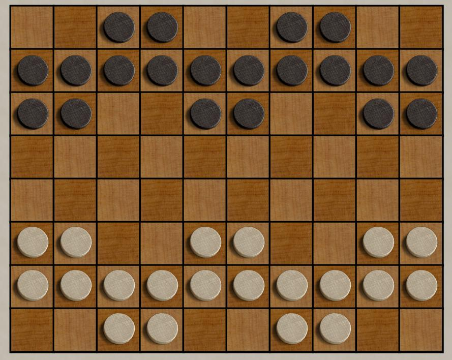

Ordo and Ordo-X
Ordo and Ordo-X are mostly
racing games, but also have elements of a connection game. All
your pieces must remain connected;.
in Ordo, the
primary way to win is to reach the opposite side of the board.
You can also win by capturing all your opponent's stones, or by
preventing your opponent from remaining connected. Pieces can only move backward when
required to reconnect. In addition to the usual single-piece
moves, Ordo features phalanx-like "Ordo" moves, where a line of pieces
move in parallel. Read the
complete rules here.
Ordo-X is
a variant, but different enough that it deserves it's own discussion.
The biggest difference is that when an opponent move disconnects
your pieces, instead of forcing reconnection, all
of the smaller group of pieces are captured. Ordo-X features an
expanded variety of "Ordo" moves, and additionally adds a second
"forward only" move if a sideways move is made. Read the
complete rules here.
In
both Ordo and Ordo-X, the wisdom of captures is far from obvious;
because of the requirement to remain connected, smaller groups of
pieces are more nimble and better able to race to the goal. When
reduced to 2 or 3 pieces, you can be virtually unstoppable.
Robots: Robot seems to be adequate, if not stellar.
|

|